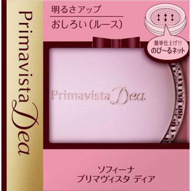

返回列表
产品名称：プリマヴィスタディア 明るさアップおしろい ルース

花王 プリマヴィスタディア 明るさアップおしろい ルース ５Ｇ
メーカー 花王
JANコード 4901301272522
商品の特徴
しっとりツヤ感のある明るい肌に仕上げます。
- 成分・分量
- ＜成分＞
タルク、硫酸Ba、ナイロン-12、スクワラン、ジメチコン、ポリシリコーン-9、ヒアルロン酸Na、エチルパラベン、シリカ、（酸化鉄／酸化チタン）焼結物、マイカ、酸化チタン、水酸化Al、パーフルオロオクチルトリエトキシシラン、酸化鉄
- 用法及び用量
- ＜使用方法＞
パフをネットの上から軽く押すようにして適量含ませ、顔全体に軽くすべらせるように仕上げます。
※粉のとれ量が少なくなったら、容器を逆さにしてパフに含ませて、お使いください。